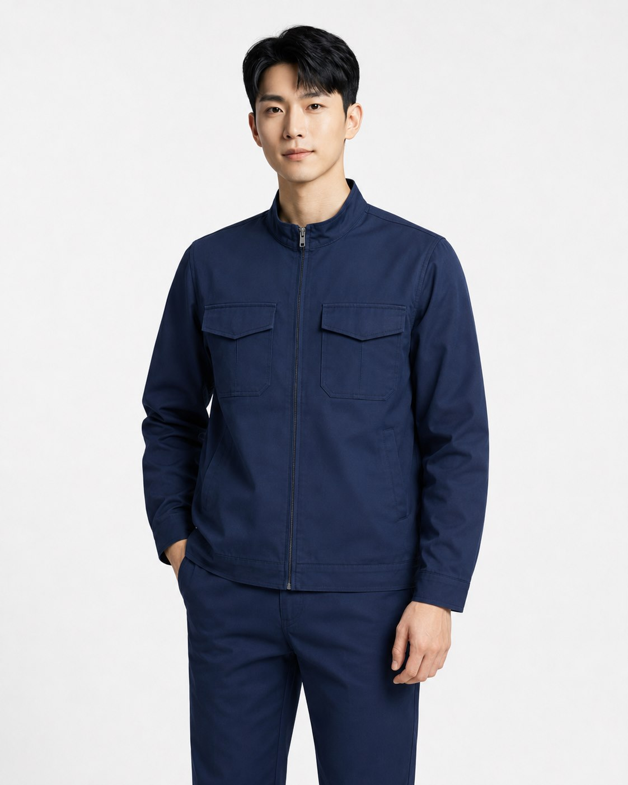
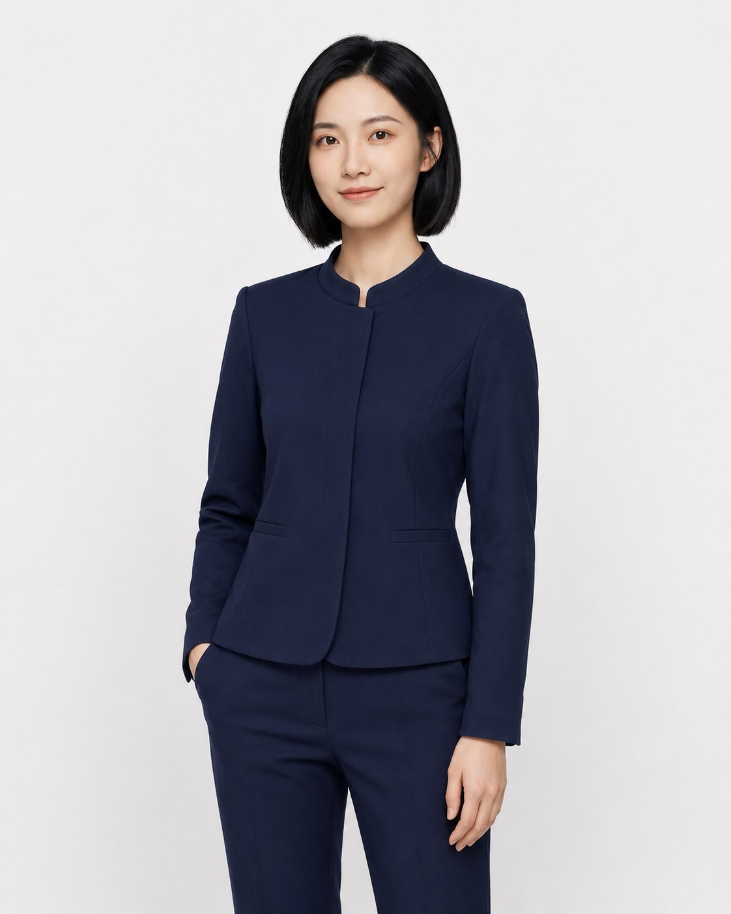
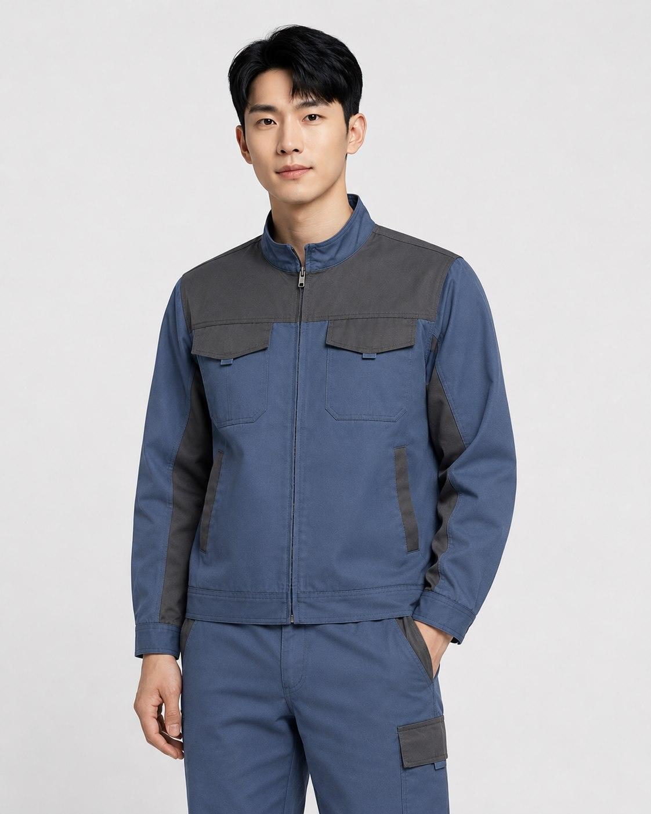
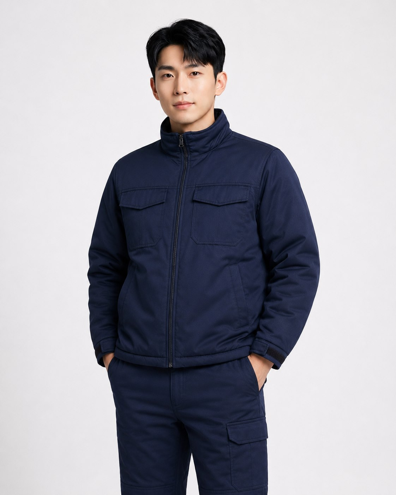
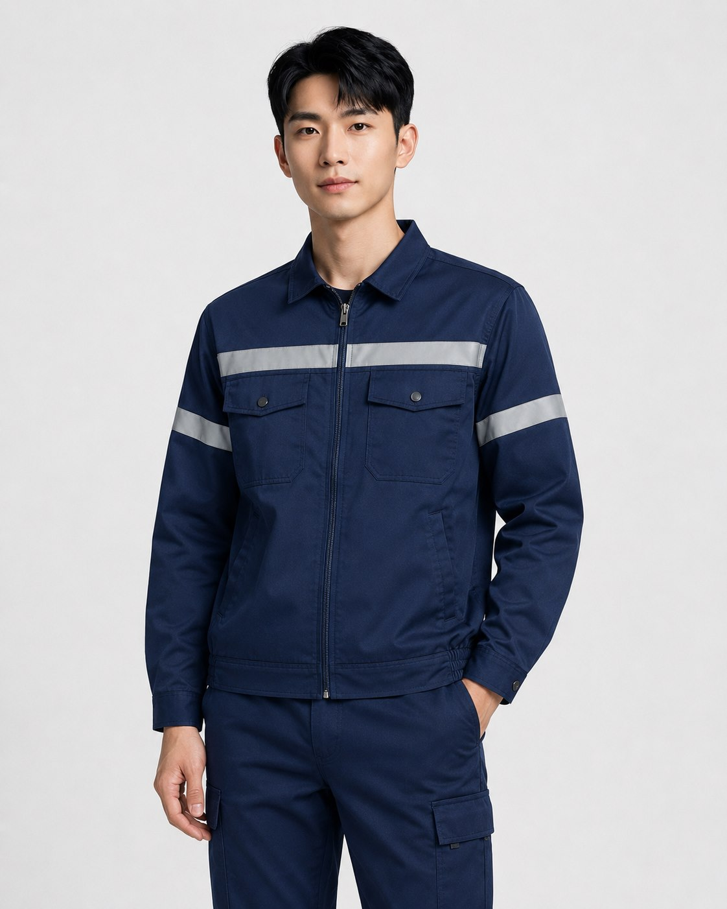
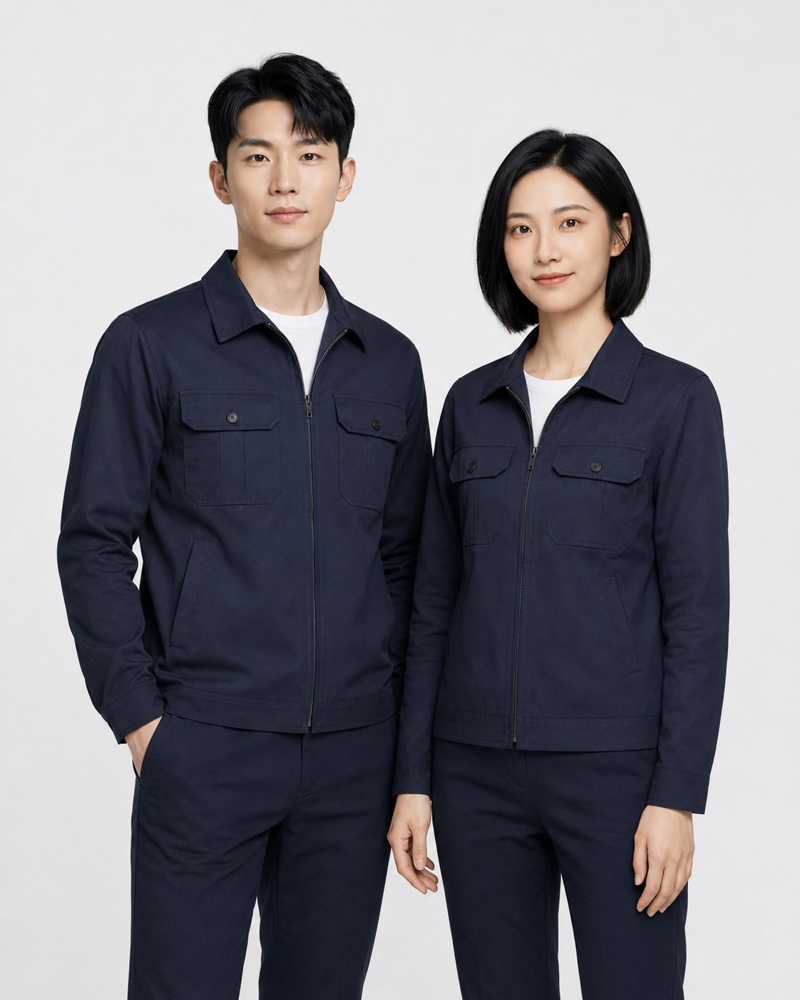
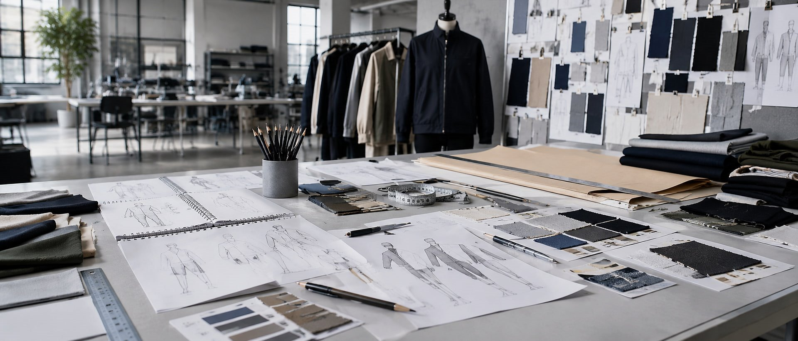
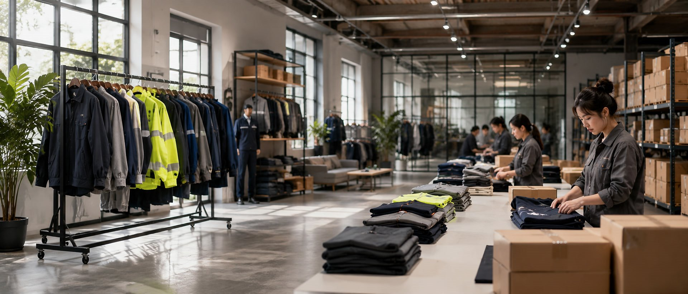

Workwear & Uniforms
Durable uniforms for factories, teams, institutions and industrial service providers.
China workwear supplier
LF Clothing is the overseas inquiry website of Beijing Lingfeng Apparel. We provide custom workwear, industrial uniforms, work jackets and service uniforms for overseas B2B buyers, with production arranged through long-term manufacturing partners and controlled by our project and quality management process.
From material selection and pattern development to order follow-up and final inspection, we help corporate and industrial clients turn apparel requirements into finished garments.
Durable uniforms for factories, teams, institutions and industrial service providers.
Formal corporate wear and business uniforms for organizations and service teams.
Practical outerwear with flexible fabric, lining and detail options.
Cotton-padded and cold-weather workwear for demanding daily use.
Functional garments for special working environments and project-specific needs.
Development from samples, reference images, technical files or detailed requirements.
Product categories
We focus on practical apparel for companies, institutions, factories, service teams and special working environments.

Durable workwear and uniforms for factories, workshops, logistics teams, energy companies and industrial service providers.

Business suits, office uniforms and formal corporate wear for organizations, institutions and service teams.

Custom work jackets and practical outerwear with flexible options for fabric, lining, pockets, trims and logo placement.

Cotton-padded and cold-weather workwear designed for warmth, durability and daily use.

Protective apparel options including anti-static, acid-resistant, UV-resistant, electromagnetic shielding, antibacterial and mildew-resistant garments.

Project-based uniform development based on samples, reference images, technical files or detailed requirements.
Production process
Every project follows a structured process from requirement confirmation and material preparation to production, inspection and packaging.
Confirm product type, quantity, functional needs, size chart and delivery expectations.
Review fabric, color, trims, lining, logo method and performance requirements.
Support pattern making, sample development and adjustment before bulk production.
Inspect incoming materials, prepare fabric, make CAD layout and complete cutting.
Proceed with sewing production, garment assembly and key process control.
Handle pressing, shaping, finishing and appearance checking.
Check finished garments, key measurements, workmanship and packaging readiness.
Prepare folding, packing, labeling and delivery support based on project requirements.
Production capability
Long-term production resources support fabric preparation, cutting, sewing, pressing, inspection and packaging for workwear, uniforms and functional garments.
Explore ProductionDigital layout and pattern preparation for efficient production planning.
Incoming fabric appearance checks before cutting and production.
Fabric spreading, cutting and preparation for sewing production.
Sewing lines for suits, jackets, uniforms, workwear and functional garments.
Pressing, shaping and finishing processes for final garment appearance.
Needle inspection, final checks and packaging preparation before delivery.

Quality control
Quality control is applied throughout the production process, from incoming fabric inspection and cutting checks to sewing process inspection, finished garment inspection and packaging review.
Fabric appearance inspection, material preparation, pre-shrinking support, color and fabric confirmation.
Cutting piece inspection, sewing process self-check, key process inspection and in-process quality follow-up.
Pressing and finishing check, finished garment inspection, needle inspection and packaging review.
Supporting quality and management documents can be provided for qualified project discussions upon request.
Export-oriented support
Lingfeng Apparel has experience supporting export-oriented apparel projects through domestic clients, where final products were produced according to overseas buyer requirements and delivered to international markets.
For new overseas clients, we support communication from product requirements, samples and technical details to production feasibility and quotation.

Industries served
We support apparel projects for corporate, institutional, industrial and service-sector clients.
Start an RFQ
Send us your product requirements, reference images, samples, size chart or technical files. Our team will review the details and provide feedback on materials, customization, sampling and production possibilities.
Request a Quote